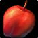

رفع باگ تکرار کوئست برای دریافت اکسپی در آستانه عرضه WoW: Forever
بلیزارد اکسپلویت مربوط به دریافت بیپایان امتیاز تجربه از یک کوئست را پیش از لانچ WoW: Forever برطرف کرد.

در جریان بتای WoW: Forever، بازیکنان متوجه یک کوئست ویژه فکشن Alliance شدند که به شکل مداوم Experience Points میداد. در حالی که گروهی از بازیکنان با استفاده از این فرصت توانستند در بتا به سرعت به Level 30 برسند، بسیاری از وجود آن کاملاً بیخبر بودند.
جزئیات کوئست و نحوه کار اکسپلویت
این کوئست که Applejack Still نام دارد و درست بیرون از Stormwind City قرار گرفته، تنها به تحویل ۴ عدد 
بر اساس ویدیویی که در سابردیت Classic WoW منتشر شد، یک کاراکتر لول ۲۱ با هر بار تحویل این کوئست ۱۷۰ امتیاز تجربه دریافت میکرد.
Aggrend در پلتفرم X تایید کرد که این فارم ناخواسته پیش از انتشار بازی رفع شده است.
سرعت Leveling همواره بحث داغی میان بازیکنان بوده است؛ عدهای خواهان روندی کندتر هستند و در طرف مقابل، عده دیگری میخواهند هرچه سریعتر به ۶۰ برسند و این دو گروه اغلب در بخش نظرات شبکههای اجتماعی با یکدیگر بحث دارند.
این اکسپلویت مشخصاً ناخواسته بود؛ بنابراین کسانی که امیدوار بودند پس از عرضه Forever از این کوئست استفاده کنند، اکنون باید کارها را از مسیر تعریفشده و عادی آن پیش ببرند.